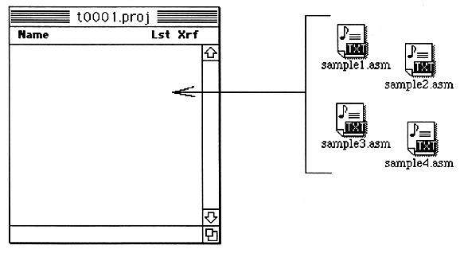

2. Overview of integrated environment operation
■ Source file creation / editing (text editing)
■ Project management of source files (collective text management)
■ Assemble source files (Z80, MC68000)
■ Link object file (create load module)
■ Create and edit source files
 | You can create a source (text) file on SDSS. The created file has the icon shown on the left, so you can see that it was created with SDSS. These files are text attributes and can be edited with other text editors. You can also start SDSS by double-clicking this icon. In that case, the text window of the double-clicked file is automatically opened. |
Project management of source files
To perform assemble link processing, the created source file must be registered in the project.

For registration, use the “Add” command in the “Project” menu instead of dragging and copying.